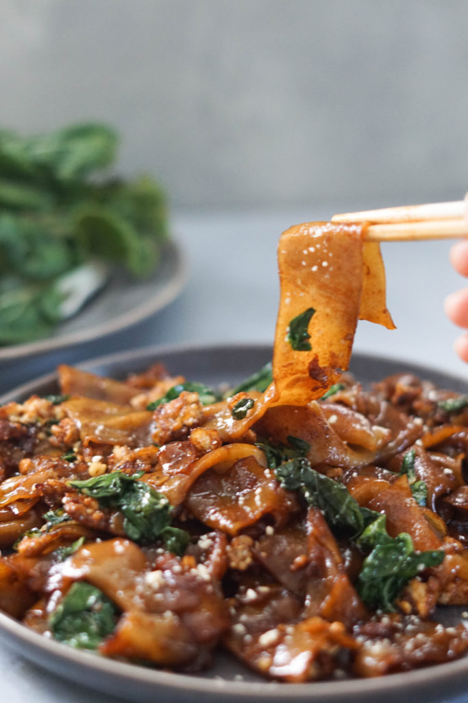

Pad See Ew Recipe
Back to Back to Main Page

Why the dish bruh?
I am going to learn how to create one of my favorite dishes. I have actually have no idea on where to start
also, so we can learn it together. Why is this my favorite dish?
Wellll...man its all texture to me. Ohh the soft wide noodles just melt into your mouth, then with the added
spices of heat mix with peppers. You can say I am more of a fan of the spices as the wild noodles are just a
bedding for the spices waiting to be taste.
What's is the dish anyways?
Pad see ew is a stir-fried noodle dish that is commonly eaten in Thailand. It can be found easily among
street food vendors and is also quite popular in Thai restaurants around the world. The origins of the dish
can be traced to China from where the noodle stir-frying technique was brought.
Ingrediants
All ingredients and steps were taken from recipeineats.com from Nagi
- Pad See Ew has a sweet-savoury-touch-of-sour flavour, and this is made with a combination of the
following ingredients:
- Dark soy sauce – For flavour and staining the noodles a dark brown.
- Ordinary or light soy sauce – For seasoning (salt) and a bit of flavour. Most of the
flavour comes from the oyster sauce and dark soy sauce.
- Oyster sauce – Key ingredient, it’s like 10 difference sauces mixed up in one bottle!
- Vinegar – To balance the sweet and savoury. Some form of sour is a key ingredient in South
East Asian cooking!
- Sugar – For sweetness.
- Noodles
- Chinese Broccoli / Gai Lan
- Protein and egg
Steps
- Garlic, chicken and Chinese broccoli STEMS first – Using either a wok or large skillet set over high heat,
heat the oil then sauté the garlic until it goes light golden. Add the chicken then once it mostly changes
from pink to white, add the Chinese broccoli stems which take longer to cook than the leafy part.
- Push everything to the side to make room to scramble the eggs on the side. This is the traditional Thai way
of scrambling eggs in Pad See Ew!
- Crack egg straight into the wok.
- Scramble egg – Then mix to scramble it. Speed is of the essence here – we want scrambled egg not a sunny
side up egg!
- Empty wok – Remove the chicken and vegetables onto plate. As mentioned above, the best way to cook Pad See
Ew at home is to cook the noodles separately so we can get some nice caramelisation on them. If we don’t do
this, then the noodles just stew instead of caramelising.
- Add noodles and sauce into the wok.
- Toss quickly for 1 to 1 1/2 minutes until the sauce is dispersed throughout the noodles and you see some
caramelisation on the edges.
- Add chicken and veg back in – Once the noodles are caramelised, add the chicken and vegetables back in. Give
it a quick toss just to disperse, then serve!